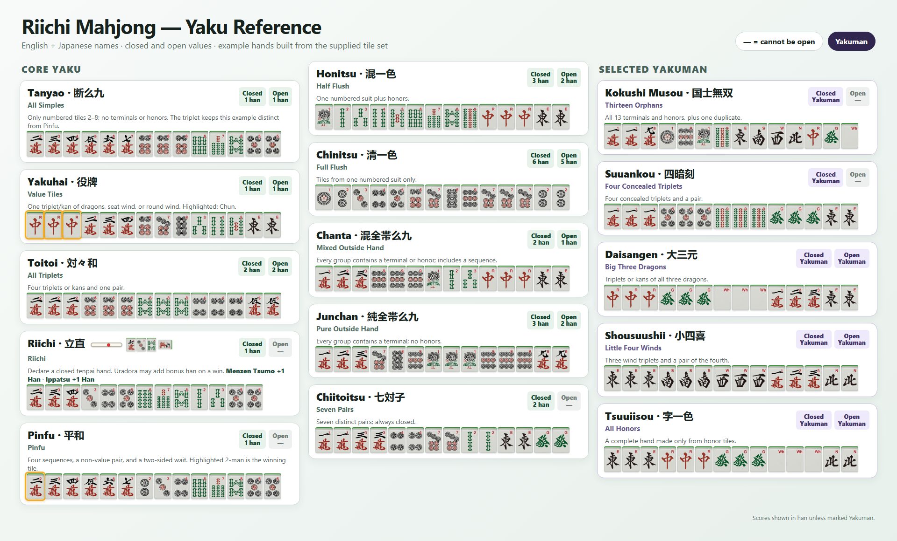

Materi ini dibuat oleh komunitas untuk komunitas — terus diperbarui seiring kami belajar cara mengajarkan Riichi dengan lebih baik.
Kami membangun sendiri beberapa aplikasi latihan gratis — cocok dipakai sendiri di luar jam gathering.
Asah kemampuan membaca tangan, hitung yaku, dan pengambilan keputusan lewat platform latihan online kami.
Buka SURIMA AcademySaat lawan riichi, tile mana yang aman dibuang? Drill khusus untuk melatih insting bertahan — sisi permainan yang paling sering dilewatkan pemula.
Buka Defend TrainerLembar referensi cepat berisi yaku-yaku yang paling sering muncul di meja, disusun agar mudah dibaca sambil bermain. Klik gambar untuk memperbesar.

Materi dan referensi di halaman ini dibuat langsung oleh anggota SURIMA, bukan terjemahan resmi. Kami akan terus memperbarui dan menambah materi seiring komunitas berkembang — masukan selalu terbuka lewat kanal kontak kami.